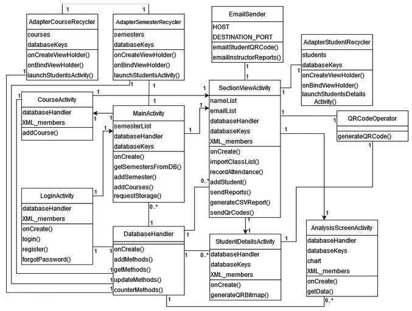
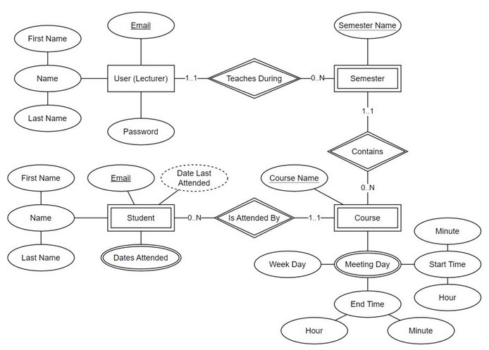
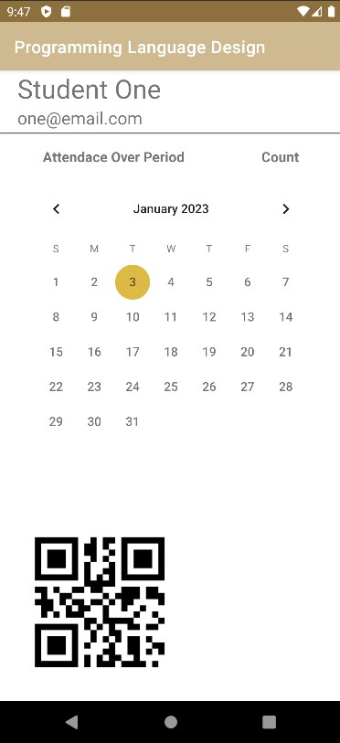
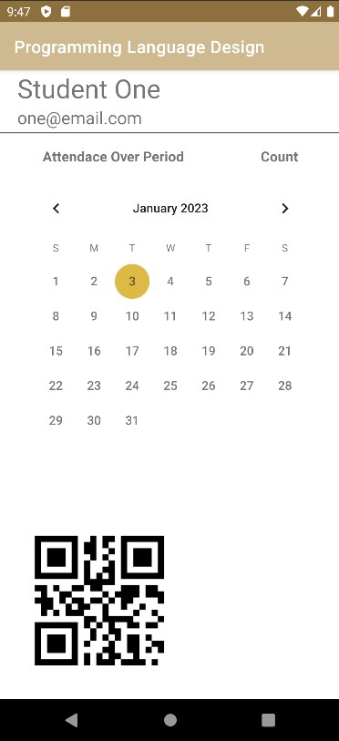

Attendance Tracker
An easy, contact-free attendance solution
Purpose
This application allows the user (a lecturer, professor, etc.) to track attendance for each class.
Attendance Tracker makes attendance tracking contact-free, simple, and fast. In short, the system generates
QR codes with the students' emails, which are sent directly to each corresponding student. The lecturer can then
scan those QR codes per class day. When a QR code is scanned, that student is marked present. The lecturer has the
ability to send reports of attendance to their email.
My contribution to this project includes creating the database, creating the registration and login modules,
organizing user navigation, and UI styling. The database was created using SQLite, using a database handler class that
contained all the methods and SQL necessary to interact with the database.
UML Class and ER Diagrams
 Demo
 

Client Reception
Our client was very happy with the results of our team. She did not expect the application to be usable by the end of the semester, but we went above and beyond her expectations. She will be able to use this application for her classes going forward.
Professor Reception
Our professor was very impressed with the software engineering practices put into the project. Overall grade was 100%.